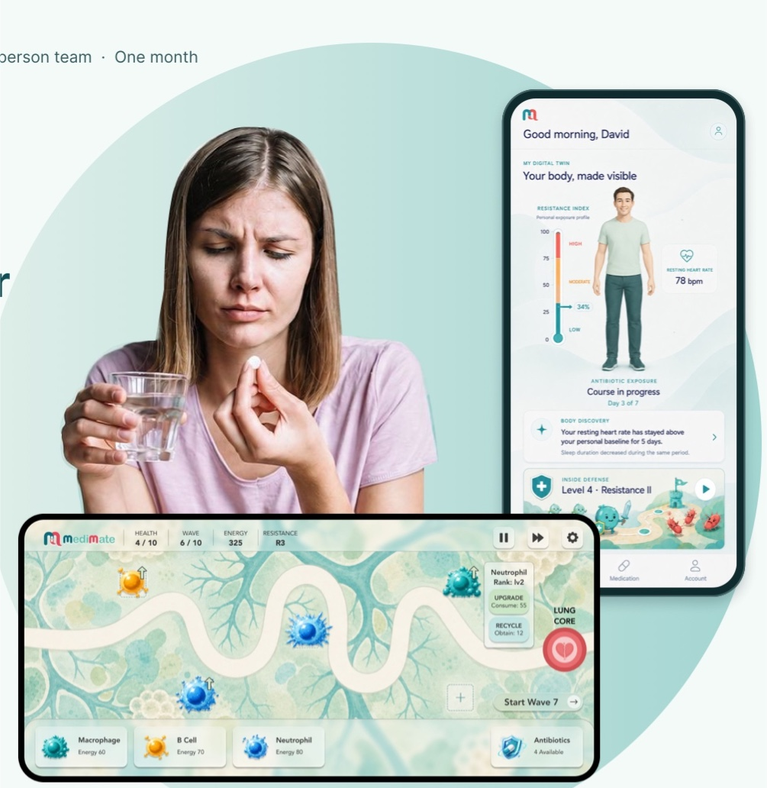
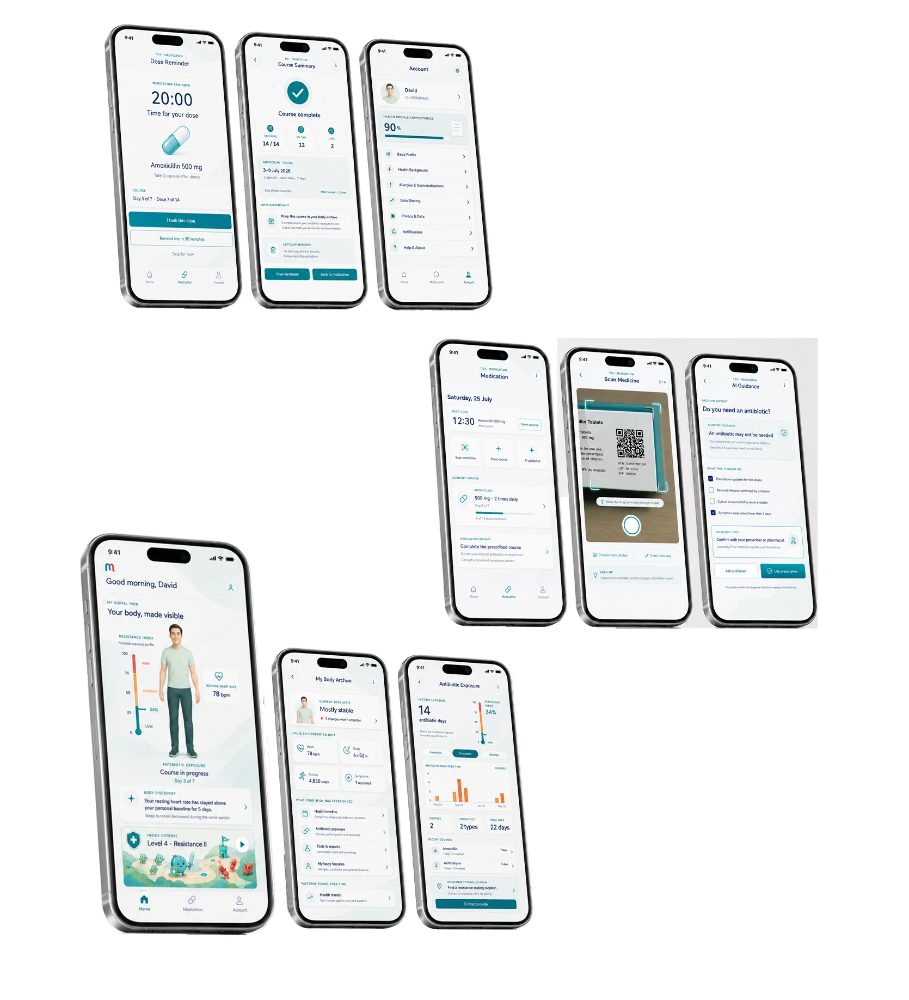

MediMate
Before reaching for an antibiotic — a medication history app and a playable game about the consequences of everyday antibiotic decisions.

Resistance grows faster than new drugs arrive.
Resistance existed long before antibiotics. What changed is the pressure we put on bacteria — and how fast resistant strains now travel. For an individual it stays invisible until a drug stops working.
Misuse creates selection pressure
Every dose kills susceptible bacteria and leaves resistant ones. Unfinished courses and leftovers keep that pressure on.
Resistance spreads faster than it emerges
Hospitals, livestock farming and global travel turn a local problem into a global one.
It stays invisible until too late
Monitoring is patchy and new drugs arrive slowly, so people see little reason to change.
A stakeholder map showed antibiotic use concentrated in healthcare and livestock. We interviewed doctors, hospital managers and a dairy farmer — and placed prescribing, institutional IT and farm regulation outside our scope. We designed for the public: busy working adults, with teenagers as a game audience.
What 161 people told us about antibiotics.
An online questionnaire in four parts — background, usage, basic knowledge and resistance awareness. 137 respondents answered every knowledge question (average 4.63 / 10). I analysed the results.
The last time they took antibiotics
Misuse happens before and during a course
Self-rated knowledge barely predicted test scores: the “very well informed” group scored below average. 24.1% believe antibiotics treat viral infections; 26.3% would take them for a cold; 19% keep leftovers.
Busy working adults, 26–45
They had the highest share of informal sources (28.1%), and 26–35-year-olds were least likely to finish a course as instructed (20.6%). In their words: “I just think of them as anti-inflammatory medicine.”
Four gaps, four features.
Each opportunity starts from a number in our own data.
| Evidence | Problem | Opportunity |
|---|---|---|
| 50.4% stop early, cut the dose or keep leftovers | Courses are not finished | Course support — log each course, remind every dose, show progress to the last day. |
| 47.4% would reuse an old antibiotic when symptoms feel similar | Decisions rely on past habit | Decision support — at the moment of use: is this an antibiotic, is it needed, what to ask a pharmacist. |
| 21.2% rely mainly on leftovers or family and friends | No one sees the full history | Visible use history — keep every course in one record and estimate exposure over time. |
| 29.2% understand what resistance actually is | Resistance feels abstract | Explain resistance — let people experience how today’s choice affects tomorrow’s infection. |
One companion for the whole medication cycle.
Decide before use, finish the course, see the history, understand resistance.
Medication management
Scan the box to log the course, get a reminder for every dose, see progress until the last day.
Guidance & support
Check if a medicine is an antibiotic and fits the symptoms; get questions to ask a pharmacist.
Digital twin
Every course is saved in one record; the twin estimates antibiotic exposure. Not a diagnosis.
Learning game
A defence game where today’s antibiotic choice makes later bacteria stronger.
User journey — one illness and the next
Falls ill at work
“I can’t take a day off.” → Do I need an antibiotic?
Gets antibiotics
28.1% of 26–45s get them from leftovers or family → Scan to start a course
Takes the course
“Did I take the evening dose?” → Dose reminders
Feels better
18.2% stop once symptoms improve → Finish the course, log it
Falls ill again
47.4% would reuse an old antibiotic → Check past use first
Understands
“So that’s what misuse does.” → Play, then see your exposure
Walk through the app flows.
These are the low-fidelity flows I designed — about 35 screens in four flows. Tap inside the phone: Back at the top left, the main button at the bottom, and the tab bar on Home, Medication and Account.
Onboarding · Home · Medication · Account
Before reusing leftover medicine
Scan or search
Scan the package or search by name.
Check the history
Review past use — or see “No past course found”.
Ask a professional
Bring the medicine details to a pharmacist or clinician.

Inside Defense — a game I programmed.
Players place immune cells along infection routes to defend the body. Antibiotics give a strong temporary advantage — and raise resistance in later waves. Pick the right drug for the right enemy; the wrong one, or too much, makes the body’s background turn from green to red.
| Pathogen | Behaviour | Infection site | Counter |
|---|---|---|---|
| P. aeruginosa | Biofilm defender | Hospital-acquired | Piperacillin / tazobactam |
| S. aureus | Armoured cluster | Skin & wounds | Vancomycin |
| E. coli | Fast mover | Urinary system | Ciprofloxacin |
| S. pneumoniae | Swarm unit | Lungs | Amoxicillin |
Data structure
Cells, bacteria, drugs and waves as data.
Wave generation
Escalating infections per level.
Cell placement
Build tiles along the route.
Reproduction
Bacteria multiply if left alone.
Three attacks
Macrophage, B cell, neutrophil.
Resistance
Background and enemies adapt.
What players said.
After playing the demo, participants commented on the visual design, clarity and strategic depth.
“The cellular environment creates a unique and immersive world. The colourful organisms and combat effects make the biological system easy to understand.”
“The core mechanics are intuitive. Players quickly learned how to deploy immune cells and adapt strategies against different threats.”
“The antibiotic system introduces meaningful decisions by balancing immediate survival with future resistance risks.”
Next test: can players explain why resistance rose in later waves?
Original boards
Click a board to open it; click again to zoom and pan.